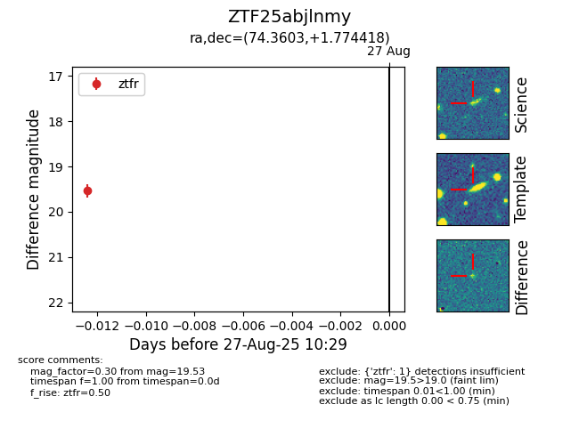

Target ZTF25abjlnmy at 2025-08-27 12:09, see:
FINK: fink-portal.org/ZTF25abjlnmy
Lasair: lasair-ztf.lsst.ac.uk/objects/ZTF25abjlnmy
ALeRCE: alerce.online/object/ZTF25abjlnmy
alt names
ZTF25abjlnmy (ztf,fink)
coordinates:
equatorial (ra, dec) = (74.3603,+1.77442)
galactic (l, b) = (197.3459,-24.22563)
photometry
last ztfg=19.67, ztfr=19.53
1 ztfg, 1 ztfr detections
